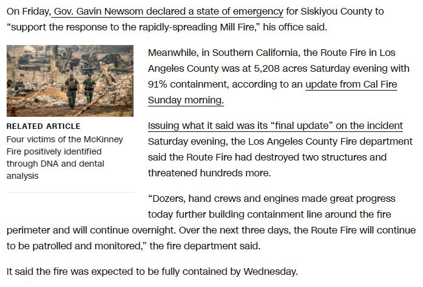
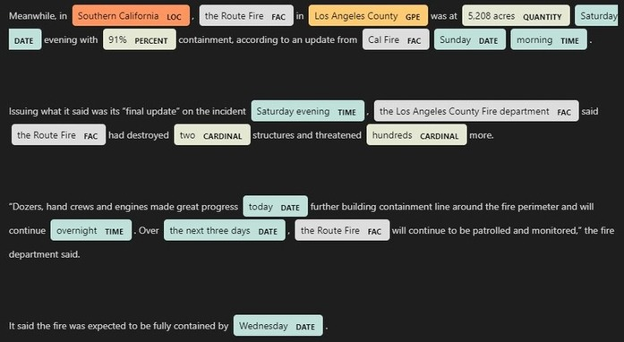

Browse My Other
Projects

Website for Yasporbi Middle School
Data Warehouse & Stored Procedure

See My Recent
Named Entity Recognition
This project utilized the concept of Named Entity Recognition (NER) to extract valuable information from unstructured text data obtained from online newspaper articles. The goal was to transform this unstructured data into structured data and store it in a database, facilitating easier analysis of wildfire incident occurrences in California.
from online news article
to NER Result
Python
BeautifulSoup (web scraping library)
spaCy (NLP library)
MySQL
Utilized the Beautiful Soup library in Python to parse the HTML content of online news article and retrieve the relevant text data.
Employed the spaCy library to perform NER on the extracted text data. This process helped identify and extract crucial information such as dates, locations, and names of individuals involved in the wildfire incidents.
Designed and implemented a structured database using MySQL to store the extracted wildfire incident data, including defining appropriate constraints and schemas for data integrity.
Browse My Other